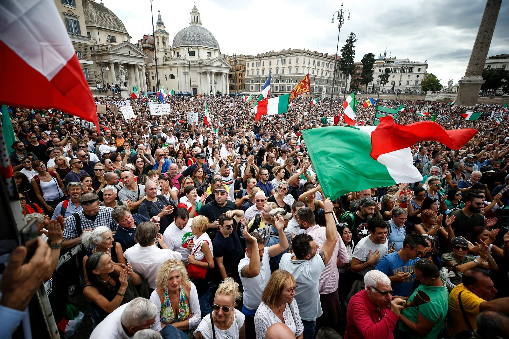

Roma Today
Over the centuries, Roma have been subjected to oppression and violence by other Europeans. During the Second World War, the Nazis exterminated hundreds of thousands of Romani people. After the war Roma continued to experience killings, violence, forced sterilization, forced segregation, evictions, and extreme poverty. Recently political leaders in Europe have fomented hatred of the Roma in order to win popular support. Their messages of intolerance resonate widely and often encourage violence from individuals and groups in countries such as Hungary, the Czech Republic and Romania where there have been fatal beatings, shootings, and firebombings against Roma. Roma people are determined to resist the injustice. Decades ago, Roma began organizing internationally. In recent years, Roma activists and leaders have begun to grow in numbers, helped by a generation of university educated Roma graduates. These activists are working to organize their communities, build grassroots change and demand political action for justice.
Protests by Romani people have been a significant expression of their collective voice, advocating for their rights and challenging systemic discrimination. Romani communities, dispersed across Europe and beyond, have faced a long history of marginalization, stereotyping, and social exclusion. In response to these challenges, Romani individuals and organizations have organized protests to demand equal opportunities, an end to discrimination, and the recognition of their cultural identity. These protests often highlight issues such as inadequate access to education, healthcare, and housing, as well as the persistent prejudice that Romani people encounter in various aspects of their lives.
Romani activists and advocates argue for policies that address these disparities and promote inclusivity. The protests also serve as a platform to dispel stereotypes and promote a more nuanced understanding of Romani culture, emphasizing the diversity and richness within their communities. In some instances, Romani protests have resulted in positive changes, leading to increased awareness and policy reforms. However, challenges persist, and the Romani people continue their struggle for social justice, equal rights, and the elimination of discrimination that has historically marked their experiences. These protests stand as a testament to the resilience and determination of the Romani community in the face of adversity, striving for a more equitable and inclusive society.
References:
1. https://www.opensocietyfoundations.org/explainers/roma-and-open-society2.https://www.romarchive.eu/en/roma-civil-rights-movement/